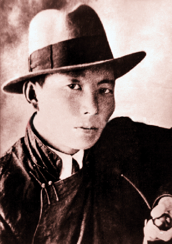

Dashdorj Natsagdorj
Father of modern Mongolian literature

About
If you’re not Mongolian, then you (probably) will not have heard of Dashdorjiin Natsagdorj.
Born in 1906, Natsagdorj was a Mongolian poet and writer.
He was also the founder of the Mongolian Writer’s Union and is considered one of the founding fathers of modern Mongolian – one of the pioneers of modern Mongol literature.
He is the author of one of my favourite Mongolian poems – ‘Minii Nutag – My Home’ which celebrates the natural beauty of Mongolia.

For 70 years (1924-1990), Mongolia was a communist state with close alignment with the Soviet Union.
The early writings of Dashdorjiin Natsagdorj during this communist period are considered an example of Mongolian “socialist realism.”
Mongolia’s literature – including the poems and writing of Dashdorjiin Natsagdorj – is framed by the cycle of the seasons, by landscape and weather.
It is also influenced by Mongolia’s rich history, its traditional nomadic culture and is also shaped by the worshipping of Buddhism and Shamanism.
If you interested go checkout his poem;